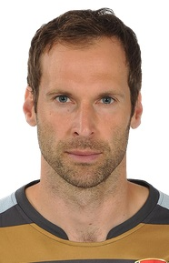
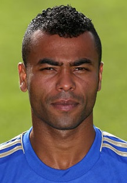
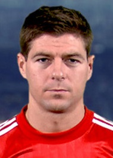
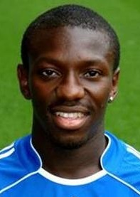
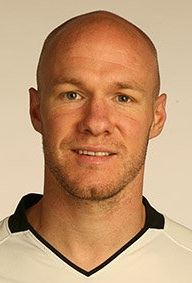
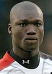
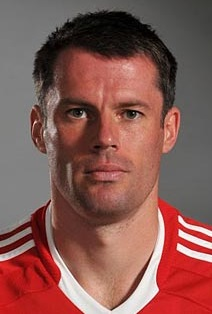
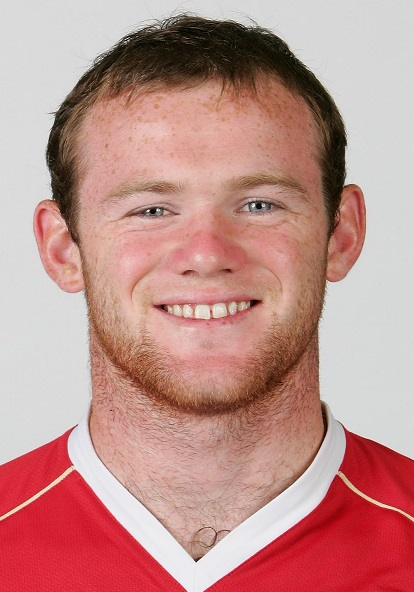
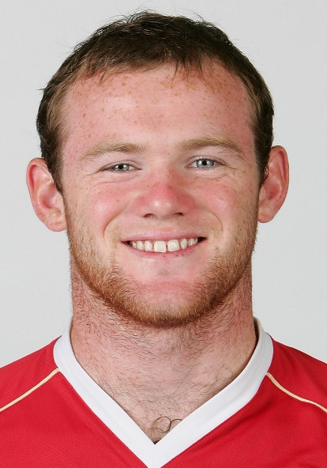
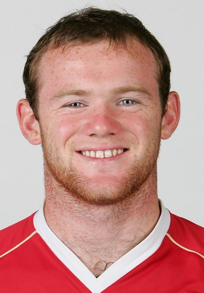

HNDDS Capstone Project | COHNDDS(F/T)201F-008
2004/05 Season
TOTY of the 2004-05 season.
PFA TOTY for the season





TOTY as chosen by the models



 


Comparison of the actual inclusions with the ones chosen by the models
Points, here, refer to the points given to the player according to the FPL-based scoring system that was implemented.
Actual inclusions in the 2004/05 PFA TOTY chosen via the voting system
Inclusions chosen by the models for the 2004/05 PFA TOTY
Sources
- All player images have been sourced from BDFutbol.